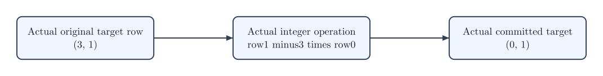
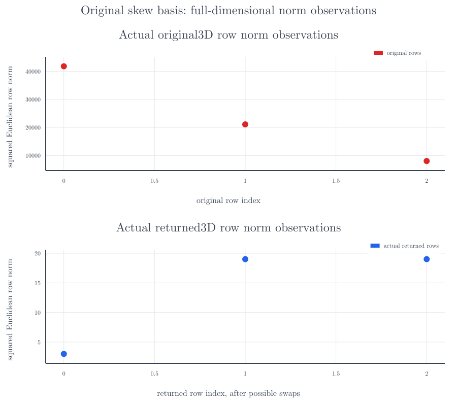
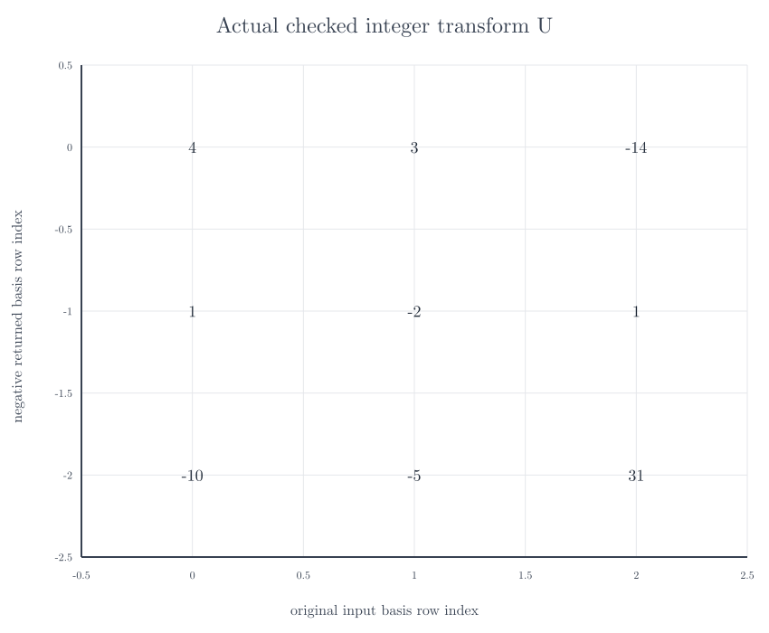
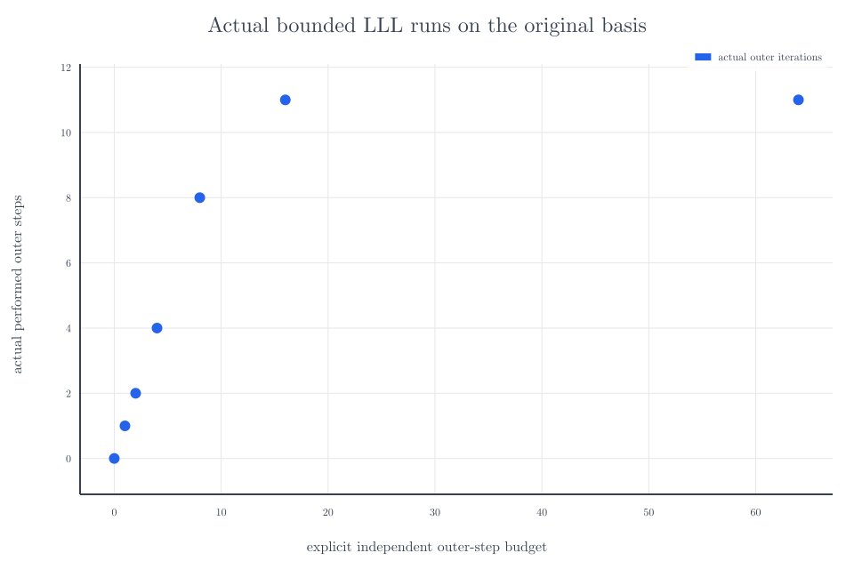

Lenstra–Lenstra–Lovasz lattice reduction
Abstract
LLL alternates integer size reduction with a floating Gram-Schmidt inequality that may trigger row swaps. We retain the original skewed3-by-3 basis, expose actual operations and an exact checked integer transform, and separate lattice preservation from computed reduction quality. Equal Gram determinants alone do not prove two bases generate the same lattice, and floating completion does not certify an exact shortest-vector theorem.
Integer operations and floating decisions
Write each basis row as b_i=b_i*+sum_{j<i}mu_ij*b_j*. Size reduction subtracts q*b_j from b_i, with q the rounded computed mu_ij when its magnitude exceeds one half. The adjacent Lovasz test compares
A size-reduction row subtraction with integer q is unimodular, and a row swap is unimodular. Starting U at the identity and applying exactly the same operations to U proves B_current=U*B_original with determinant(U)=plus or minus1. This is the lattice-preservation reason. The implementation checks every exact basis/transform coordinate in widened integer arithmetic before committing a complete row, and throws if signed64 storage cannot hold it.
By contrast, the decisions use double Gram-Schmidt and rounded projections. The exact-arithmetic LLL quality/termination theorems do not automatically become rigorous certificates for finite-precision decisions. An explicit outer-step budget bounds the run; completion status and observed computed inequalities are reported separately. Neither row identity nor each individual row norm is promised to decrease.
Tiny actual size reduction
For rows(1,0),(3,1), the actual first projection is3. The producing integer operation b1←b1−3*b0 gives(0,1), and the transform’s second row becomes(−3,1). The next actual Lovasz test passes at delta0.75. All displayed values below come from the native operation trace.
#include <dm/dm.hpp>
int main() {
std::filesystem::create_directories("build");
auto t = dm::algorithms::lll_trace({{1, 0}, {3, 1}});
auto e = t.events.front();
std::print("| actual event kind0:reduce,1:Lovasz,2:swap | actual target row | actual source row | " "actual integer multiplier | actual pre-operation projection | actual left | actual right | " "actual check passed |\n| ---: | ---: | ---: | ---: | ---: | ---: | ---: | --- |\n");
for (auto &r : t.events)
std::print("| {} | {} | {} | {} | {} | {} | {} | {} |\n", int(r.kind),
r.k, r.j, r.multiplier, r.projection, r.left, r.right,
r.passed);
auto &state = t.states[e.state];
dm::graphics::Diagram d;
d.node("old", {0, 0},
std::format("Actual original target row\n({}, {})", t.original[1][0],
t.original[1][1])).node("operation", {6, 0},
std::format(
"Actual integer operation\nrow{} minus{} times row{}",
e.k, e.multiplier, e.j)).node(
"new", {12, 0},
std::format("Actual committed target\n({}, {})", state.basis[1][0],
state.basis[1][1])).edge("old", "operation").edge(
"operation", "new");
d.save_svg("build/lll_tiny.svg");
}| actual event kind0:reduce,1:Lovasz,2:swap | actual target row | actual source row | actual integer multiplier | actual pre-operation projection | actual left | actual right | actual check passed |
|---|---|---|---|---|---|---|---|
| 0 | 1 | 0 | 3 | 3 | 0 | 0 | false |
| 1 | 1 | 0 | 0 | 0 | 1 | 0.75 | true |

Original skewed3-by-3 basis
Retain rows(201,37,5),(143,25,3),(88,16,2) and delta0.75. The original report compared before/after norms and a floating Gram determinant. Here those row-norm observations remain, while actual native events, returned integer coordinates, exact transform entries and computed reduction flags provide additional evidence. On this original fixture, the completed result has an exact half projection that the final double Gram-Schmidt observes as0.50000000000000011. The strict computed size-reduced flag is therefore false despite completion. We retain that observation rather than weakening the comparison or claiming a floating certificate. The original integer determinant is28 and its Gram determinant784, but a matching covolume alone would not establish lattice equality. The actual unimodular operations do.
The figure compares actual full three-dimensional row norms, without projecting the lattice into a misleading two-dimensional geometry. Original and returned row positions are labelled as row indices, not claims of one-to-one shortened vector identities after swaps.
#include <dm/dm.hpp>
int main() {
std::filesystem::create_directories("build");
std::vector<std::vector<long long>> b{{201, 37, 5}, {143, 25, 3},
{88, 16, 2}};
auto t = dm::algorithms::lll_trace(b);
auto &a = t.analysis;
std::vector<double> x, before, after;
std::print("| row index | original x | original y | original z | actual returned x | actual returned y " "| actual returned z | observed original squared norm | observed returned squared norm |\n| " "---: | ---: | ---: | ---: | ---: | ---: | ---: | ---: | ---: |\n");
for (std::size_t i = 0; i < 3; ++i) {
std::print("| {} | {} | {} | {} | {} | {} | {} | {} | {} |\n", i,
b[i][0], b[i][1], b[i][2], a.basis[i][0], a.basis[i][1],
a.basis[i][2], a.initial_squared_norms[i],
a.final_squared_norms[i]);
x.push_back(i);
before.push_back(a.initial_squared_norms[i]);
after.push_back(a.final_squared_norms[i]);
}
std::print("\nActual completed {}; computed size-reduced {}; computed Lovasz {}; actual outer steps {}; " "size reductions {}; swaps {}; real GS evaluations {}.\n",
a.stop == dm::algorithms::LLLStop::Completed,
a.observed_size_reduced, a.observed_lovasz, a.work.outer_steps,
a.work.size_reductions, a.work.swaps, a.work.gram_schmidt_runs);
auto p = dm::graphics::RPlot::create(), q = dm::graphics::RPlot::create();
p.points(x, before, "original rows", {220, 38, 38}, 6).title(
"Actual original3D row norm observations").x_label("original row index").y_label("squared Euclidean row norm");
q.points(x, after, "actual returned rows", {37, 99, 235}, 6).title(
"Actual returned3D row norm observations").x_label(
"returned row index, after possible swaps").y_label(
"squared Euclidean row norm");
dm::graphics::RLayout::create(2, 1).add(p).add(q).size(900, 800).title(
"Original skew basis: full-dimensional norm observations").fit_panels().save_svg("build/lll_original.svg");
}| row index | original x | original y | original z | actual returned x | actual returned y | actual returned z | observed original squared norm | observed returned squared norm |
|---|---|---|---|---|---|---|---|---|
| 0 | 201 | 37 | 5 | 1 | -1 | 1 | 41795 | 3 |
| 1 | 143 | 25 | 3 | 3 | 3 | 1 | 21083 | 19 |
| 2 | 88 | 16 | 2 | 3 | 1 | -3 | 8004 | 19 |
Actual completed true; computed size-reduced false; computed Lovasz true; actual outer steps 11; size reductions 11; swaps 7; real GS evaluations 19.

Exact transformation evidence is stronger than equal volume
The returned U has integer rows and is produced solely by checked integer row subtraction and swaps, so its exact mathematical determinant is plus or minus1. Multiplying U by the original basis yields the returned basis; independent verification later checks this with arbitrary-precision integers for every actual state. The table and figure below display the actual native U, not a transform recovered by floating inversion.
For contrast, bases[(2,0),(0,1)] and[(1,0),(0,2)] both have Gram determinant4 but generate different integer sublattices: only the second contains(1,0). Equal Gram determinant is a necessary volume comparison, not a sufficient same-lattice certificate. This report uses the actual elementary-operation witness instead.
#include <dm/dm.hpp>
int main() {
std::filesystem::create_directories("build");
auto t =
dm::algorithms::lll_trace({{201, 37, 5}, {143, 25, 3}, {88, 16, 2}});
auto &u = t.analysis.transform;
std::print("Actual integer row transform U, with returned basis = U times original basis:\n\n| actual " "returned row | original row0 coefficient | original row1 coefficient | original row2 " "coefficient |\n| ---: | ---: | ---: | ---: |\n");
auto p = dm::graphics::RPlot::create();
for (std::size_t i = 0; i < u.size(); ++i) {
std::print("| {} | {} | {} | {} |\n", i, u[i][0], u[i][1], u[i][2]);
for (std::size_t j = 0; j < u[i].size(); ++j)
p.text(j, -double(i), std::to_string(u[i][j]), {31, 41, 55}, 18);
}
std::print("\nActual captured states {}; actual event records {}; complete logical capture entries " "{}.\n",
t.states.size(), t.events.size(), t.captured_entries);
p.size(850, 700).x_limits(-.5, 2.5).y_limits(-2.5, .5).title(
"Actual checked integer transform U").x_label("original input basis row index").y_label("negative returned basis row index").save_svg("build/lll_transform.svg");
}Actual integer row transform U, with returned basis = U times original basis:
| actual returned row | original row0 coefficient | original row1 coefficient | original row2 coefficient |
|---|---|---|---|
| 0 | 4 | 3 | -14 |
| 1 | 1 | -2 | 1 |
| 2 | -10 | -5 | 31 |
Actual captured states 19; actual event records 29; complete logical capture entries 798.

Explicit budgets and floating breakdown limits
Each budget below is an independent bounded run on the original skew basis, not a prefix rerun used to reconstruct the trace. StepLimit returns an equivalent partial integer basis and exact transform, with no “reduced” completion claim. The ordinary legacy method uses the same producer with a100000-step budget and throws on exhaustion. Actual action counts, rather than a theoretical polynomial bound, describe this finite-precision implementation.
A zero computed orthogonal norm throws as numerical breakdown. It can occur on a truly dependent basis or because converting very large distinct integers to double loses their difference. For[(LLONG_MAX,1),(LLONG_MAX−1,1)], the exact determinant is1, yet both large first coordinates round to the same double. This is not an exact-rank certificate. Rounded multipliers and every exact basis/transform coordinate are range-checked before an unsafe integer cast or update.
#include <dm/dm.hpp>
int main() {
std::filesystem::create_directories("build");
std::vector<std::vector<long long>> b{{201, 37, 5}, {143, 25, 3},
{88, 16, 2}};
std::vector<double> x, y;
std::print("| explicit independent outer budget | actual outer steps | actual completed | computed " "size-reduced observation | computed Lovasz observation |\n| ---: | ---: | --- | --- | --- " "|\n");
for (std::size_t budget : {0, 1, 2, 4, 8, 16, 64}) {
auto a = dm::algorithms::lll_analyze(b, .75, budget);
std::print("| {} | {} | {} | {} | {} |\n", budget, a.work.outer_steps,
a.stop == dm::algorithms::LLLStop::Completed,
a.observed_size_reduced, a.observed_lovasz);
x.push_back(budget);
y.push_back(a.work.outer_steps);
}
const auto m = std::numeric_limits<long long>::max();
bool breakdown = false;
try {
auto a = dm::algorithms::lll_analyze({{m, 1}, {m - 1, 1}});
} catch (const std::domain_error &) {
breakdown = true;
}
std::print("\nActual floating GS breakdown on the explicit exact-determinant1 control: {}.\n",
breakdown);
auto p = dm::graphics::RPlot::create();
p.points(x, y, "actual outer iterations", {37, 99, 235}, 6).title(
"Actual bounded LLL runs on the original basis").x_label(
"explicit independent outer-step budget").y_label(
"actual performed outer steps").save_svg("build/lll_budget.svg");
}| explicit independent outer budget | actual outer steps | actual completed | computed size-reduced observation | computed Lovasz observation |
|---|---|---|---|---|
| 0 | 0 | false | false | false |
| 1 | 1 | false | false | false |
| 2 | 2 | false | false | true |
| 4 | 4 | false | false | true |
| 8 | 8 | false | false | false |
| 16 | 11 | true | false | true |
| 64 | 11 | true | false | true |
Actual floating GS breakdown on the explicit exact-determinant1 control: true.

Contracts and verification
Nonempty bases are rectangular with positive coordinate dimension and at most that many rows; delta is finite in(0.25,1). Actual computed orthogonal norms must be positive finite. Basis and transform coordinates are signed64 long long, with exact widened product/subtraction and checked narrowing; no arbitrary-precision fallback or guaranteed support for every mathematically reducible full-range basis is implied. Complete ordinary finite decision order is retained, with shared actual GS state used for observations. Empty input is valid and produces no GS state.
For n rows and dimension d, each actual captured state counts1+2*n*d+2*n*n+n logical input/transform/orthogonal/projection/norm records, plus n*d original coordinates and one record per actual event. States/events are admitted before their copies; unknown future operations are not fabricated. Default cap is one million,0 disables only that optional cap, and scalar fields/row headers/capacities/result/runtime copies/bytes are excluded. Captures own complete actual states with no prefix reconstruction.
Native tests verify exact unimodular identities in every actual captured state
and across 169 triangular integer families, retain the original skew basis and
tiny reduction, and check explicit budgets, numerical breakdown, integer range
guards, quotas and ownership. The ten-report batch passed 101 native CTest
cases, 34 directly instrumented ASan/UBSan cases, 103 compiled/executed public
examples, 515/515 scoped file definitions plus 10 exact LCG class definitions,
and ten representative clangd hovers. Independent Python integer/Fraction,
explicit-label graph search, quadratic sequence DP and full weighted-stump
references passed 69430 records across all ten topics, including a separately
fitted held-out Iris model. Frozen ordinary compatibility passed 1000 Lex-BFS
orders, 1000 library sorts, 100 LBG codebooks, 100 complete five-round
LogitBoost ensembles and 200 LLL bases; corrected LBG final labels/objectives
are intentionally excluded from historical compatibility. All 4 complete
programs executed and all 4 native figures were rendered and visually reviewed,
with clipped legends corrected and rerun. HTML/Markdown computed-result and
figure-byte checks gate legacy retirement. Repeatable receipts are retained in
build/mepml-conversion/batch-204-213/.
References
A. K. Lenstra, H. W. Lenstra Jr. and L. Lovasz(1982), Factoring Polynomials with Rational Coefficients, Mathematische Annalen261,515–534. The exact-arithmetic row-operation rationale is retained, while the implementation’s floating decisions, bounded storage and finite budget are explicit limits on any reduction-quality claim.